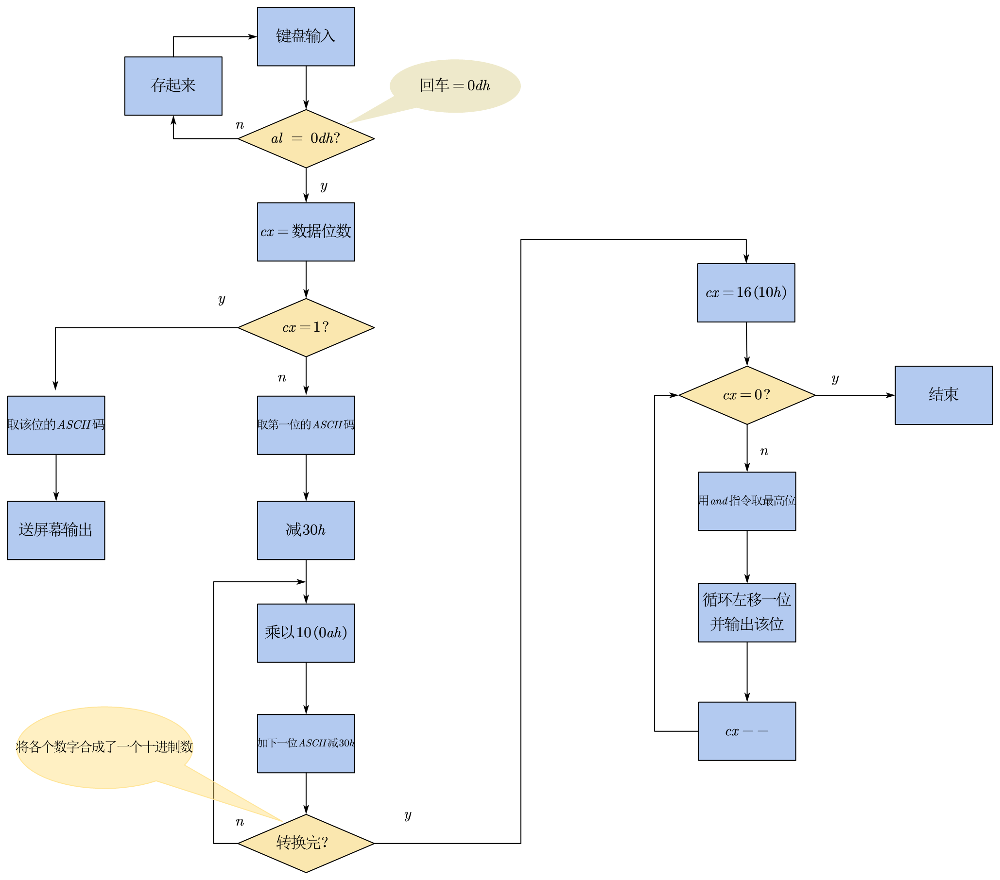

汇编实验：十进制转二进制
题目
- 重复从键盘输入不超过5位的十进制数，按回车键结束输入
- 将该十进制数转换成二进制数；结果以2进制数的形式显示在屏幕上
- 如果输入非数字字符，则报告出错信息，重新输入
- 直到输入’Q’或’q’时程序运行结束
算法流程图

代码
data segment
buffer db 5 dup(?)
input db 'please input a number <= 5 digits', 0ah, 0dh, '$'
outOfBound db 0ah, 0dh, 'error: more than 5 digits',0ah, 0dh, '$'
notANum db 0ah, 0dh, 'error: not a number',0ah, 0dh,'$'
data ends
code segment
assume ds:data, cs:code
start:
mov ax, data
mov ds, ax
mov bx, 0
mov si, offset buffer
mov ah, 09h
mov dx, offset input
int 21h
l1: ; 输入及判定
mov ah, 01h
int 21h
cmp al, byte ptr 'q'
je over
cmp al, byte ptr 'Q'
je over
cmp al, 0dh
je deal
inc bx
cmp bx, 5
ja error1
cmp al, byte ptr '0'
jb error2
cmp al, byte ptr '9'
ja error2
mov [si], al
inc si
jmp l1
deal: ; 输入结束，处理数字
mov cx, bx
mov si, offset buffer
mov ah, 0 ; 清除高位
mov al, [si]
sub al, 30h
cmp cx, 1 ; 一位数则直接输出
je printOne
dec cx
l2:
mov bx, 0ah
mul bx
inc si
mov bl, [si]
sub bx, 30h
add ax, bx
loop l2
jmp printAll
error1:
mov ah, 09h
mov dx, offset outOfBound
int 21h
jmp start
error2:
mov ah, 09h
mov dx, offset notANum
int 21h
jmp start
printOne:
mov ah, 02h
add al, 30h
mov dl, al
int 21h
jmp over
printAll:
mov cx, 10h
mov bx, ax
l3:
mov ax, bx
and ax, 8000h ; 取最高位
rol ax, 1 ; 循环左移，将最高位移到最低位
mov ah, 02h
add al, 30h
mov dl, al
int 21h
shl bx, 1
loop l3
over:
mov ah, 4ch
int 21h
code ends
end start本博客所有文章除特别声明外，均采用 CC BY-SA 4.0 协议 ，转载请注明出处！